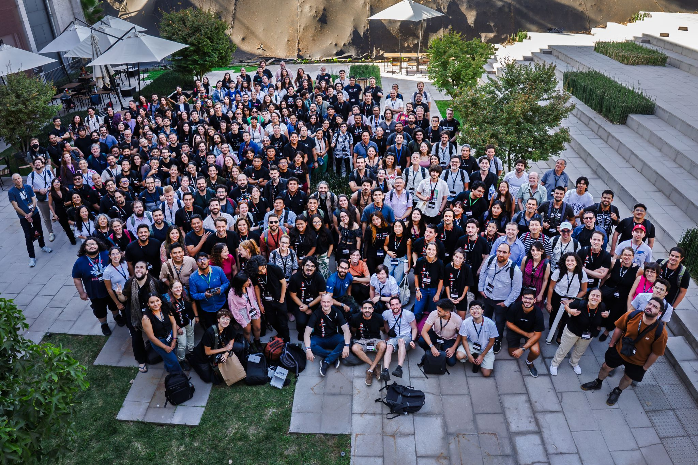
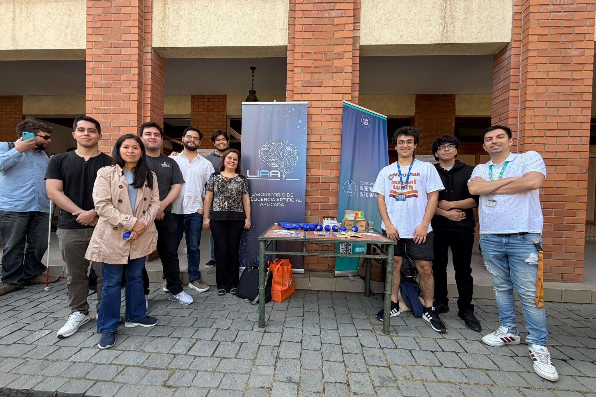
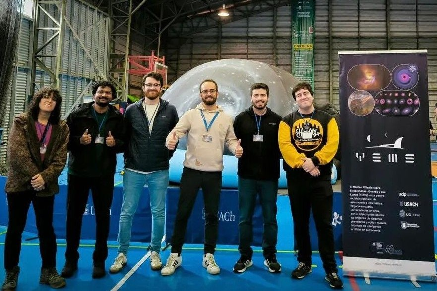
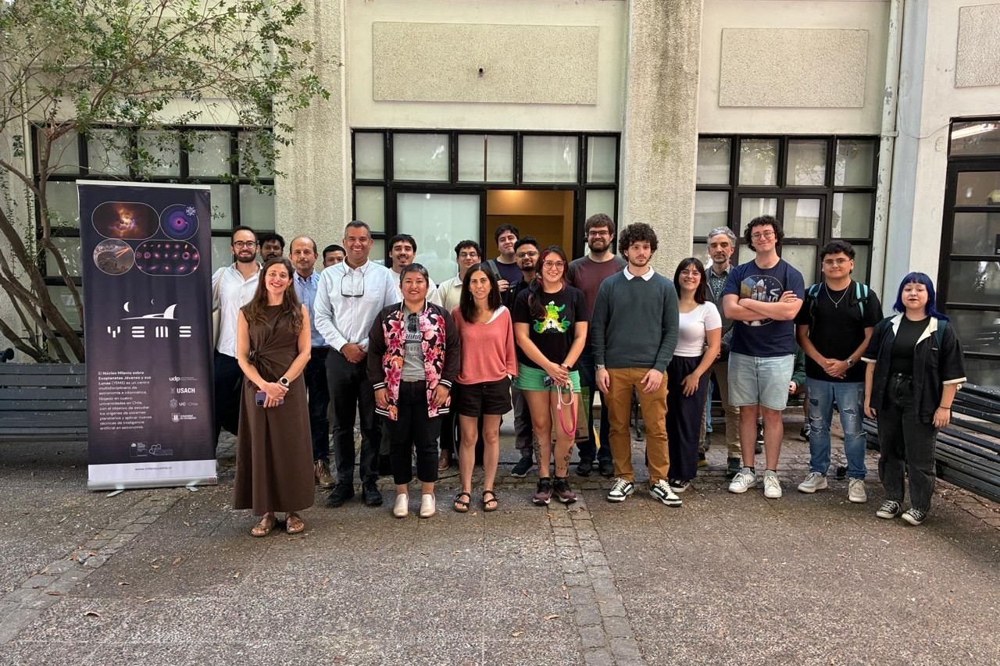

Current Master's student in Computer Science at the Universidad de Santiago de Chile and member of the Millennium Nucleus YEMS. I am interested in the development of machine learning models, deep learning, and data analysis, with a focus on their application to interdisciplinary problems, particularly in astronomy and physics. Currently finalizing my thesis, where I work on simulation and parameter inference in protoplanetary disks using Deep Operator Networks, while exploring opportunities to pursue a PhD.
Professional Interests
Deep Learning, Astronomy, Physics, Machine Learning and Scientific Computing.
Personal Interests
I love photography, I was also part of a choral group, and lately I've been taking theater classes.
Conferences and Meetings

Participation in KhipuAI 2025 - Santiago de Chile

Computer Vision Lab (CVL) Conference - Universidad de los Andes

Chilean Astronomical Society Meeting - Puerto Montt

YEMS - Diego Portales University